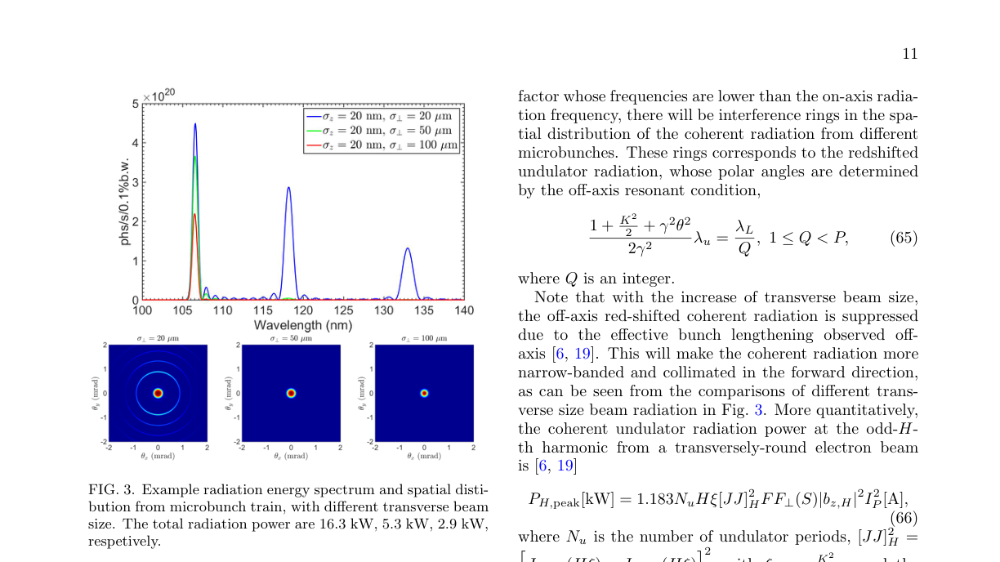
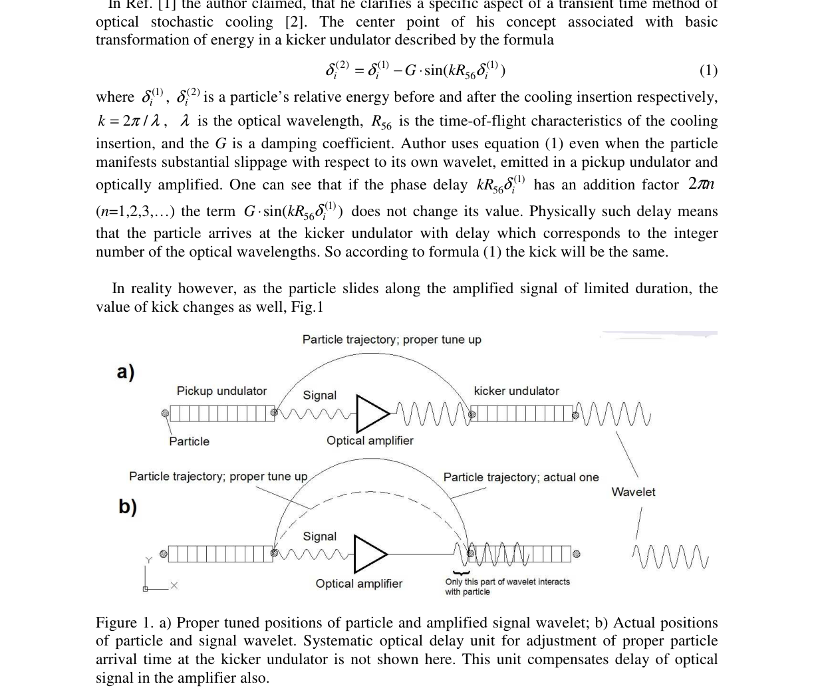

Research Paper Analysis
1. Application of Optical Stochastic Cooling in Future Accelerator Light Sources
Authors: Xiujie Deng
Categories: physics.acc-ph, physics.app-ph, physics.ins-det, physics.optics, physics.plasm-ph
Relevance: 9.0/10
Confidence: 0.90
Suggested Project: Amplified Stochastic Oscillator for the IOTA Ring
Summary
The paper proposes a compact storage ring that combines optical stochastic cooling (OSC) with steady‑state microbunching (SSMB) to generate high‑power, high‑flux extreme‑ultraviolet (EUV) radiation. Using present‑day technology, the authors show that a 50 m circumference ring can deliver kilowatt‑level average EUV power and photon flux exceeding 10^20 ph s^−1 0.1 %bw, four orders of magnitude above existing synchrotron sources. The work derives general OSC damping‑rate formulas for coupled lattices, analyzes amplitude‑dependent cooling ranges, and evaluates diffusion and heating effects. It then applies these results to an SSMB ring, presenting a parameter set and demonstrating the feasibility of the combined OSC‑SSMB concept for compact, high‑brightness EUV sources.
Key Contributions
- Derivation of explicit OSC damping‑rate expressions for a fully coupled 3‑D lattice, including amplitude‑dependent cooling ranges.
- Analysis of OSC‑induced diffusion and energy heating in bunched beams.
- Application of the OSC formalism to a steady‑state microbunching storage ring, yielding a compact design that produces kilowatt EUV power and >10^20 ph s^−1 0.1 %bw flux.
- Demonstration that the OSC‑SSMB combination can provide a high‑flux EUV source suitable for ARPES and other condensed‑matter studies.
Important Figure

FIG. 3. Example radiation energy spectrum and spatial disti- bution from microbunch train, with different transverse beam size. The total radiation power are 16.3 kW, 5.3 kW, 2.9 kW, respetively. (page 11).
Why It Matters
The paper focuses on optical stochastic cooling theory, pickup‑to‑kicker radiation transport, and longitudinal emittance damping—all core topics of the "Amplified Stochastic Oscillator for the IOTA Ring" project. It also discusses high‑power EUV generation, directly relevant to the project's goal of understanding optical stochastic cooling in a storage ring. No other listed project aligns as closely with the OSC content.
Links
- Abstract: https://arxiv.org/abs/2407.16098v1
- PDF: https://arxiv.org/pdf/2407.16098v1
- Extracted full text: /Users/thomas/Desktop/Agents/research-newsletter-agent/data/markdown/2407.16098v1.md
2. Comment on Damping Force in the Transit-time Method of Optical Stochastic Cooling
Authors: E. G. Bessonov, A. A. Mikhailichenko
Categories: physics.acc-ph
Relevance: 8.0/10
Confidence: 0.90
Suggested Project: Amplified Stochastic Oscillator for the IOTA Ring
Summary
The comment points out a mistake in the treatment of the damping force in the transit‑time method of optical stochastic cooling, arguing that the damping coefficient depends on the number of optical periods overlapping the particle in the kicker undulator and that optimal phasing is more complex than previously stated.
Key Contributions
- Shows that the damping coefficient G is a function of the optical delay and the number of wavelet periods seen by the particle.
- Demonstrates that the kick magnitude decreases when the particle encounters fewer periods of the amplified signal, contradicting the constant‑G assumption.
- Clarifies that optimal phasing must account for this delay dependence, affecting phase‑space fragmentation predictions.
- References earlier work on phase‑space fragmentation to contest priority claims.
Important Figure

Figure 1. a) Proper tuned positions of particle and amplified signal wavelet; b) Actual positions of particle and signal wavelet. Systematic optical delay unit for adjustment of proper particle arrival time at the kicker undulator is not shown here. This unit compensates delay of optical signal in the amplifier also. (page 1).
Why It Matters
The paper discusses optical stochastic cooling theory and the transit‑time method, directly relevant to the Amplified Stochastic Oscillator project’s goals of understanding optical stochastic cooling theory, pickup‑to‑kicker radiation transport, and phase‑space coupling.
Links
- Abstract: https://arxiv.org/abs/1307.6185v1
- PDF: https://arxiv.org/pdf/1307.6185v1
- Extracted full text: /Users/thomas/Desktop/Agents/research-newsletter-agent/data/markdown/1307.6185v1.md
3. Stochastic Cooling with Strong Band Overlap
Authors: Valeri Lebedev
Categories: physics.acc-ph
Relevance: 8.5/10
Confidence: 0.90
Suggested Project: Amplified Stochastic Oscillator for the IOTA Ring
Summary
The paper examines how overlapping Schottky bands in stochastic cooling systems—particularly when moving from microwave to optical or coherent electron cooling—affect the maximum achievable cooling rate and the optimal system gain.
Key Contributions
- Analysis of the impact of strong Schottky band overlap on cooling performance.
- Derivation of conditions for optimal gain in overlapping-band stochastic cooling systems.
- Quantitative assessment of maximum cooling rate limitations due to band overlap.
- Guidelines for tuning cooling systems when operating at high central frequencies.
- Discussion of implications for transitioning from microwave to optical stochastic cooling.
Why It Matters
The study directly addresses theoretical aspects of stochastic cooling with band overlap, which is central to the goals of the Amplified Stochastic Oscillator project (optical stochastic cooling theory, pickup‑to‑kicker transport, cooling decrements). It provides analytical insights that can inform lattice design and cooling system optimization for the IOTA ring.
Links
- Abstract: https://arxiv.org/abs/2011.14410v1
- PDF: https://arxiv.org/pdf/2011.14410v1
4. Nonlinearly Shaped Pulses in Photoinjectors and Free-Electron Lasers
Authors: Nicole Neveu, Randy Lemons, Joseph Duris, Jingyi Tang, Yuantao Ding, Agostino Marinelli, Sergio Carbajo
Categories: physics.acc-ph, physics.optics
Relevance: 8.0/10
Confidence: 0.90
Suggested Project: Machine Learning for Photoinjector Beam Quality Enhancement
Summary
The paper investigates dispersion‑controlled nonlinear shaping (DCNS) of laser pulses at the cathode of a photoinjector to reduce emittance and beam tails, and evaluates the impact on free‑electron laser (FEL) performance. Using simulations of the LCLS‑II injector and linac, the authors optimize the DCNS pulse shape, propagate the resulting electron beam through the linac, and estimate the resulting SASE FEL output. The study finds that DCNS‑shaped pulses can increase x‑ray power per pulse by up to 35 % compared to conventional Gaussian laser pulses.
Key Contributions
- Proposed a dispersion‑controlled nonlinear shaping (DCNS) technique for laser pulses at the photoinjector cathode.
- Demonstrated through simulation that DCNS reduces emittance and suppresses beam tails in the injector.
- Optimized the DCNS pulse shape and propagated the beam through the linac to assess downstream effects.
- Estimated FEL performance and quantified a potential 35 % increase in SASE x‑ray power per pulse relative to Gaussian pulses.
Why It Matters
The paper focuses on laser pulse shaping in photoinjectors to improve beam quality and FEL output, directly addressing goals of the Machine Learning for Photoinjector Beam Quality Enhancement project such as optimizing injector parameters and improving beam emittance. It does not involve reinforcement learning or stochastic cooling, so it is not relevant to those projects.
Links
- Abstract: https://arxiv.org/abs/2306.16590v1
- PDF: https://arxiv.org/pdf/2306.16590v1
5. Stochastic Cooling Enhanced Steady-State Microbunching
Authors: Xiujie Deng
Categories: physics.acc-ph
Relevance: 8.0/10
Confidence: 0.90
Suggested Project: Amplified Stochastic Oscillator for the IOTA Ring
Summary
The paper proposes a 50 m circumference storage ring that integrates optical stochastic cooling (OSC) with steady‑state microbunching (SSMB) to generate kilowatt‑level radiation at 100 nm, with potential extension to EUV and soft X‑ray wavelengths using current technology.
Key Contributions
- Integration of OSC and SSMB concepts in a single storage ring design
- Demonstration that a 50 m ring at several hundred MeV can produce kilowatt‑level 100 nm radiation
- Analysis of the feasibility of extending the radiation wavelength into the EUV/soft X‑ray regime with OSC‑SSMB
- Identification of the compact light source potential for fundamental science and industry applications
Why It Matters
The paper directly addresses optical stochastic cooling theory, pickup‑to‑kicker radiation transport, and the generation of high‑power short‑wavelength radiation, all of which align closely with the goals of the "Amplified Stochastic Oscillator for the IOTA Ring" project. It does not provide detailed simulation or experimental results, so relevance is high but not maximal.
Links
- Abstract: https://arxiv.org/abs/2512.09399v1
- PDF: https://arxiv.org/pdf/2512.09399v1
6. Microlens Array Laser Transverse Shaping Technique for Photoemission Electron Source
Authors: A. Halavanau, G. Ha, G. Qiang, W. Gai, J. Power, P. Piot, E. Wisniewski, D. Edstrom, J. Ruan, J. Santucci
Categories: physics.acc-ph
Relevance: 7.5/10
Confidence: 0.90
Suggested Project: Machine Learning for Photoinjector Beam Quality Enhancement
Summary
The paper investigates the use of microlens arrays to improve the transverse uniformity of UV drive laser pulses on photocathodes, aiming to reduce beam asymmetry and space‑charge induced degradation in photoemission electron sources at FAST and AWA. Experimental characterization of laser spot homogeneity and periodic pattern formation is presented, and results are compared with paraxial analysis, ray tracing, and wavefront propagation simulations.
Key Contributions
- Demonstrated that microlens arrays can significantly enhance transverse laser spot uniformity on UV photocathodes.
- Provided experimental measurements of homogeneity and periodic pattern formation at the cathode surface.
- Compared experimental data with theoretical models (paraxial analysis, ray tracing, wavefront propagation) to validate the shaping technique.
- Showed applicability of the technique at two accelerator facilities (FAST and AWA).
Why It Matters
The study directly addresses laser‑beam shaping for photoemission sources, which is highly relevant to improving photoinjector beam quality—one of the primary goals of the "Machine Learning for Photoinjector Beam Quality Enhancement" project. While the paper does not involve machine learning, the technique can be integrated into the project’s optimization workflow.
Links
- Abstract: https://arxiv.org/abs/1609.01661v1
- PDF: https://arxiv.org/pdf/1609.01661v1